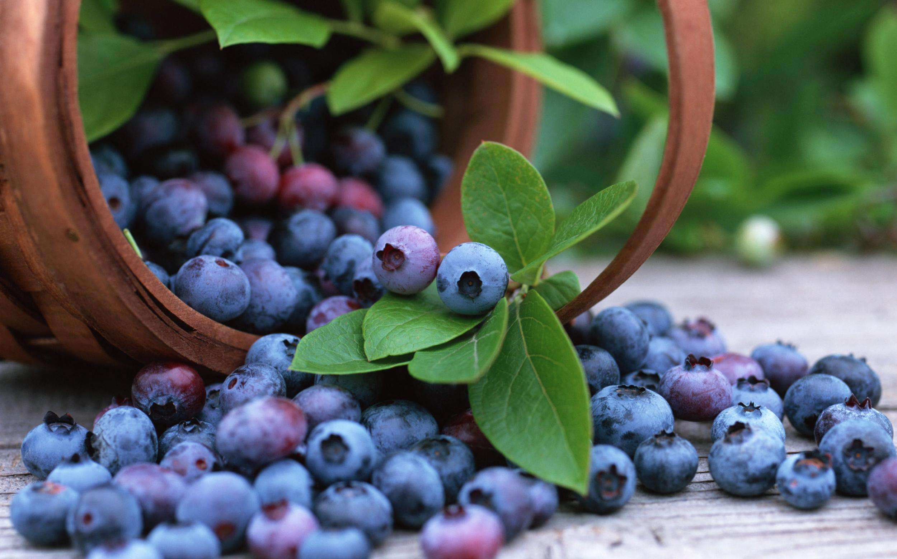
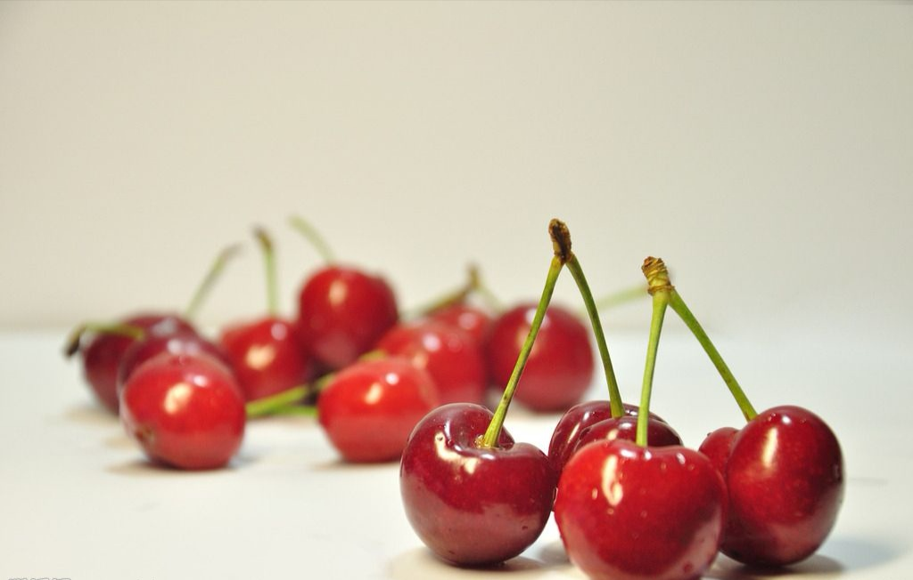
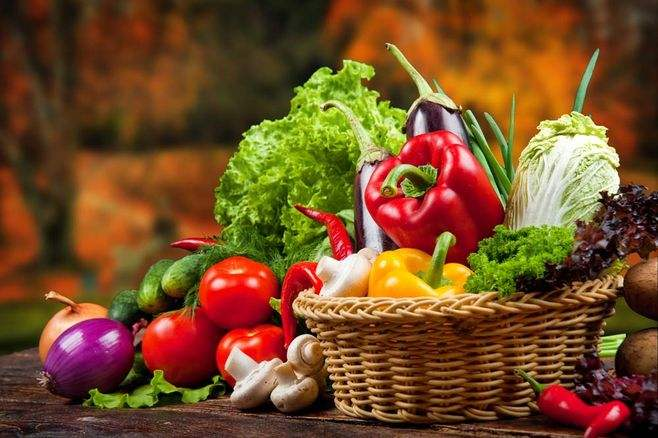
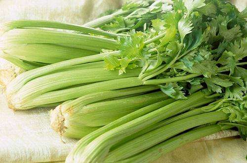

水果
我们都知道，有一些果蔬是可以帮助我们减肥的
但很少有人知道到底哪些果蔬可以帮助我们减肥，接下来，我们就为大家介绍一下最能帮助我们减肥的果蔬
快来看看有没有你经常吃的吧！
 蓝莓蓝莓富含花青素，具有活化视网膜功效，可以强化视力，防止眼球疲劳而备受注目。
也是世界粮农组织推荐的五大健康水果之一。
花青素是一种非常重要的植物水溶性色素，属于纯天然的抗衰老营养补充剂，是目前人类发现的最有效的抗氧化生物活性剂。
且蓝莓中有机酸含量约占总酸含量的一半以上。
健身时多多食用蓝莓也有益于身体哦
 樱桃樱桃铁的含量较高，每百克樱桃中含铁量多达59毫克，居于水果首位。
樱桃可以缓解贫血。铁是合成人体血红蛋白的原料，对于女性来说，有着极为重要的意义。
但樱桃也不能多吃，因为其中除了含铁多以外，还含有一定量的氰甙，若食用过多会引起铁中毒或氰化物中毒。
葡萄葡萄中的多种果酸有助于消化，适当多吃些葡萄，能健睥和胃。葡萄中含有矿物质钙、钾、磷、铁以及多种维生素B1、维生素B2、维生素B6、维生素C和维生素P等
研究发现，葡萄比阿司匹林能更好地阻止血栓形成，并能降低人体血清胆固醇水平
中医认为葡萄性平、味甘酸，入肺、脾、肾经，有补气血、益肝肾、生津液、强筋骨、止咳除烦、补益气血、通利小便的功效。
吃什么蔬菜
减肥期间当然要吃蔬菜啦
可分为茎叶类减肥菜、根茎类减肥菜、瓜果类减肥菜。
不同类别的蔬菜组合起来才能起效果
 各种蔬菜粗纤维的蔬菜可以保持我们的肠胃舒畅
例如芹菜等
 芹菜果蔬的重要性
纤维有益美肤
水果的纤维质为果胶物质，有益排便；纤维成分另外还可以促进身体的代谢功能。因为水果可以增加人体的排泄和代谢，因此有益瘦身。
维生素让人美丽
水果主要供给的营养素是维生素，其中以维生素C和维生素A最为重要，水果的维生素C不像烹煮蔬菜时会大量流失，因此是维生素C的天然补充食品。维生素C能延缓老化，是美容不可缺乏的营养素。
多吃水果有益健康
水果中含有天然色素，能有效预防癌症，而含有β胡萝卜素的部分水果，在吃进人体内会转变成维生素A，可以防止细胞遭受自由基的伤害。另外，在柑橘类水果中的抗癌物质——类生物黄碱素，可以帮助脂溶性致癌物质转化为水溶性，有利排出体外。水果能帮助塑身
丰富维生素C的水果能促进身体的代谢，是想减重者可以多补充的水果。番石榴、葡萄、柑橘、柳丁、葡萄柚、柠檬等都能够为身体的代谢增添活力，所以也要适量摄取。